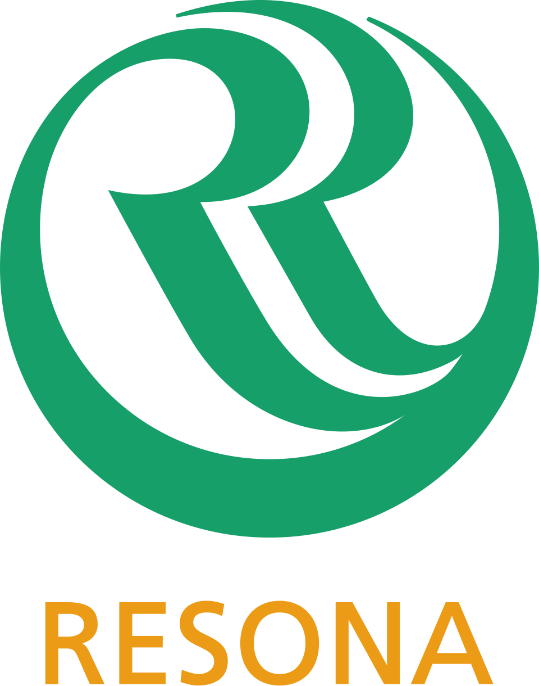

리소나 홀딩스 Resona Holdings
리소나 홀딩스(Resona Holdings)는 일본 도쿄 고토구에 본사를 둔 은행 지주회사이다. Resona Group의 지주회사로, Daiwa Bank와 Asahi Bank의 사업을 이어받은 은행 그룹을 이끈다.
최종 업데이트

리소나 홀딩스는 어떤 브랜드인가
리소나 홀딩스는 TYO 8308로 상장된 지주회사이며 Resona Group을 이끈다. 이 그룹은 일본 은행업계에서 상위권에 속한 대형 은행 그룹으로, 2012년 기준 다섯 번째 규모였다.
본사는 도쿄 고토구의 Kiba 지역에 있으며, 지주회사 체제는 2001년 12월 Daiwa Bank Holdings 설립에서 시작되었다. 주요 운영 회사는 오사카에 본점을 둔 전국 단위의 기업·소매 은행인 Resona Bank와, 사이타마현에 본점을 두고 주로 사이타마현을 대상으로 영업하는 규모가 더 작은 Saitama Resona Bank이다.
두 은행은 일본의 시중은행(city banks)으로 분류된다. 이들 은행의 영업 대부분은 2003년 합병한 Daiwa Bank와 Asahi Bank에서 이어졌다.
리소나 홀딩스는 어떻게 시작되고 성장했나
Resona Holdings의 뿌리는 1918년 Osaka Nomura Bank로, Tokushichi Nomura가 세운 Nomura zaibatsu의 금융 부문 역할을 했다. 이 은행은 1927년 Nomura Bank, 1948년 The Daiwa Bank로 이름을 바꿨다.
다른 한 축인 Asahi Bank는 1945년 아홉 개 은행의 합병으로 생긴 Japan Saving Bank에서 출발해, 1948년 Kyowa Bank와 1991년 Kyowa Saitama Bank를 거쳐 1992년 Asahi Bank가 되었다. Daiwa는 2001년 12월 지주회사 Daiwa Bank Holdings를 세웠고, 같은 달 주식 교환으로 Asahi Bank를 인수한다고 발표했다.
이 회사는 2002년 10월 1일 Resona Holdings로 이름을 바꿨고, 2003년 3월 1일 두 은행의 자산 대부분을 합쳐 Resona Bank를 출범시켰다.
리소나 홀딩스의 브랜드 아이덴티티는 무엇인가
2003년 합병과 공적자금 투입을 거친 Daiwa Bank와 Asahi Bank의 계보를 잇는 일본 시중은행 그룹이다. 오사카의 Resona Bank와 사이타마의 Saitama Resona Bank 두 축으로 이루어진다.
리소나 홀딩스의 대표 제품과 서비스는 무엇인가
그룹의 중심 사업은 은행업이며, 주요 운영 회사는 Resona Bank와 Saitama Resona Bank이다. Resona Bank는 오사카에 본점을 둔 전국 단위의 기업·소매 은행이다.
Saitama Resona Bank는 사이타마현에 본점을 두고 주로 사이타마현을 대상으로 영업한다. 2003년 통합 때 Asahi Bank의 사이타마 지점 100곳과 도쿄 지점 3곳이 Saitama Resona Bank로 옮겨졌다.
전후 시기에 Daiwa Bank는 은행업과 신탁 업무를 함께 제공한 몇 안 되는 대형 은행 중 하나였다.
리소나 홀딩스는 지금 어떤 상태인가
2003년 초 Resona Group의 자기자본비율이 크게 떨어졌고, 감사인이 이연법인세자산을 포함한 재무제표의 인증을 거부해 사실상 지급불능 상태에 놓였다. 2003년 5월 17일 일본 정부는 Resona Bank를 통해 1.96 trillion 엔의 공적자금을 투입하기로 결정했다.
이에 따라 정부는 지주회사 의결권의 68.25%를 보유한 최대주주가 되어 사실상 국유화가 이루어졌고, 기존 주주의 지분은 크게 희석되었다.
리소나 홀딩스 로고는 어떻게 변해왔나
자주 묻는 질문
리소나 홀딩스는 어느 나라 브랜드인가요?
리소나 홀딩스는 일본의 금융 브랜드입니다.
리소나 홀딩스는 언제 설립되었나요?
리소나 홀딩스는 2001년 설립되었습니다.
리소나 홀딩스의 브랜드 아이덴티티는 무엇인가요?
2003년 합병과 공적자금 투입을 거친 Daiwa Bank와 Asahi Bank의 계보를 잇는 일본 시중은행 그룹이다.
리소나 홀딩스의 대표 제품은 무엇인가요?
그룹의 중심 사업은 은행업이며, 주요 운영 회사는 Resona Bank와 Saitama Resona Bank이다.
리소나 홀딩스는 현재 어떤 상태인가요?
2003년 초 Resona Group의 자기자본비율이 크게 떨어졌고, 감사인이 이연법인세자산을 포함한 재무제표의 인증을 거부해 사실상 지급불능 상태에 놓였다.
리소나 홀딩스의 본사는 어디에 있나요?
리소나 홀딩스의 본사는 고토구에 있습니다(위키데이터 기준).
리소나 홀딩스의 공식 웹사이트는 어디인가요?
리소나 홀딩스의 공식 웹사이트는 http://www.resona-gr.co.jp/ 입니다.
출처와 검증
리소나 홀딩스 관련 참고: 공식 웹사이트 · 위키데이터 Q1232514 · 한국어 위키백과 · 영어 위키백과. 브랜드명은 한글과 원어를 함께 표기하되 데이터에 없는 표기는 만들지 않습니다. 기원 국가·설립연도는 검수된 정의문에서 확인된 값을 우선하고, 없을 때만 공식 웹사이트 URL이 일치하는 위키데이터 개체의 값을 씁니다. 탄생일의 월·일은 위키데이터, 위키백과 정보상자, 본문 가운데 같은 연월로 확인되는 값만 싣고, 출처끼리 다르면 싣지 않습니다. 위키데이터 값은 2026-11-14 기준입니다.